Pimalai Resort & Spa
Our base on Koh Lanta. The spacious duplex private pool villa made it very easy to settle in and stay awhile.
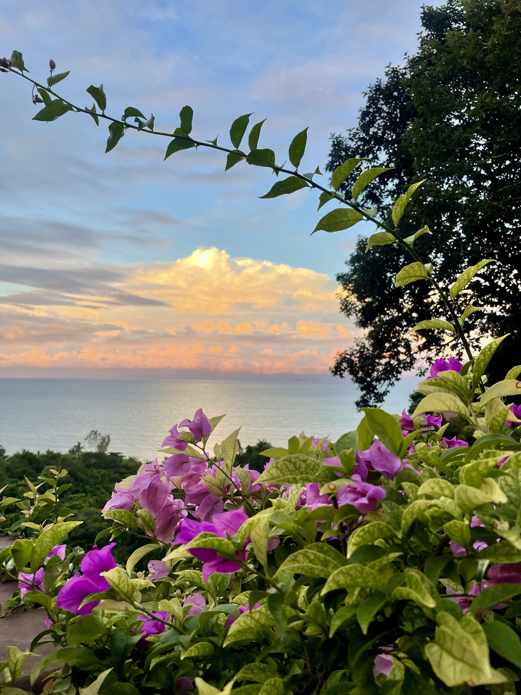
OUR KOH LANTA
Koh Lanta was never about racing around the island ticking things off. We found ourselves happily staying close to Pimalai, where the villa, pool, beach and warm Andaman water gave us more than enough for a few wonderfully slow days.
We had somewhere beautiful to retreat to, enough space for the whole family to relax and a rhythm that quickly became our own. On this trip, doing less wasn't a compromise. It was the point.
FROM OUR CAMERA
THE BASE
We stayed at Pimalai Resort & Spa in a spacious duplex private pool villa, and it quickly became the centre of the holiday. It was the sort of place where lazy mornings, swims and long stretches of doing absolutely nothing felt completely natural.
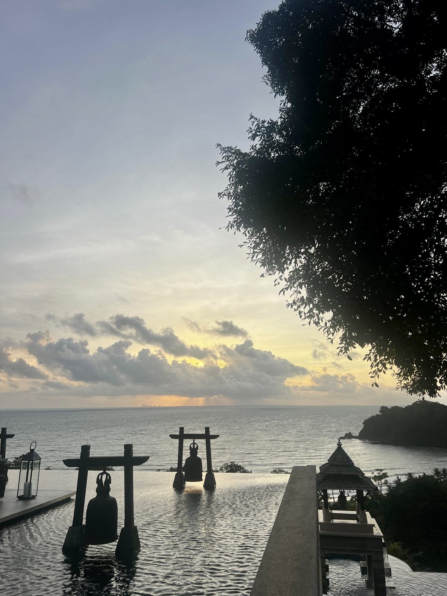
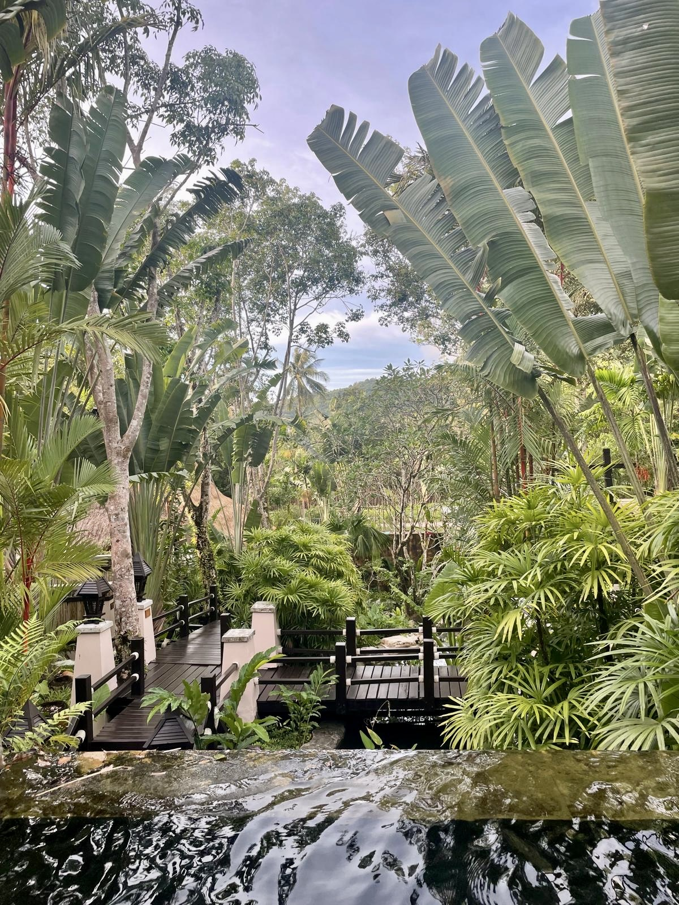
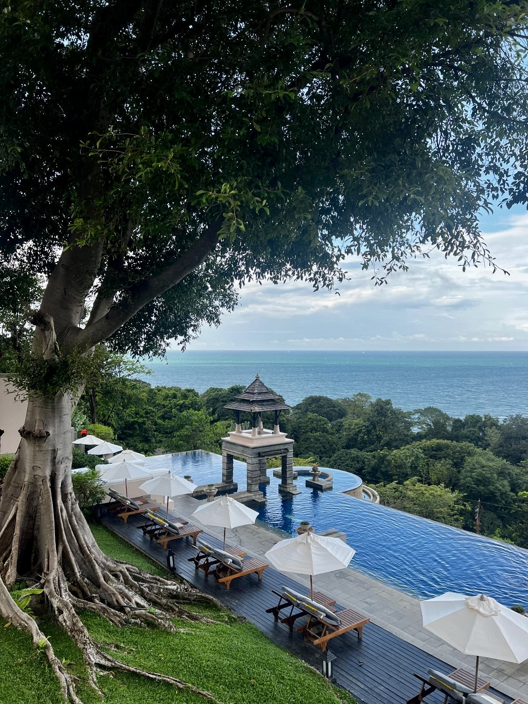
SLOW DAYS
Days slipped naturally from the pool to the beach and back again. There was no pressure to make an itinerary work when the surroundings were already doing the job.
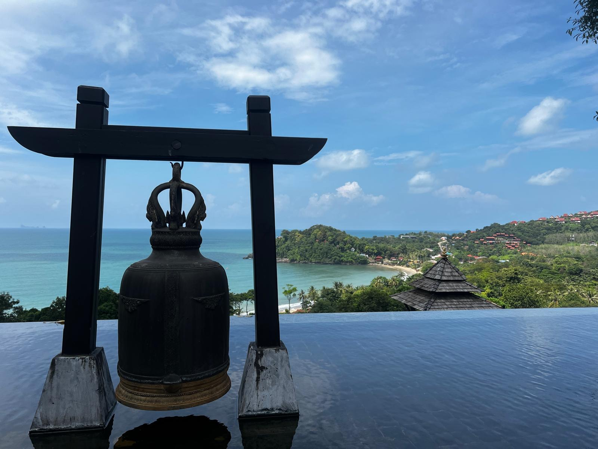
We would wander down towards the water, settle into the warmth and let the day unfold. It was the kind of holiday rhythm that is surprisingly difficult to manufacture — and wonderfully easy to fall into here.
THE ROUTINE
Daily Muay Thai lessons gave the mornings some structure. It was a brilliant way to start the day — a little effort, plenty of energy, and then straight back into holiday mode.
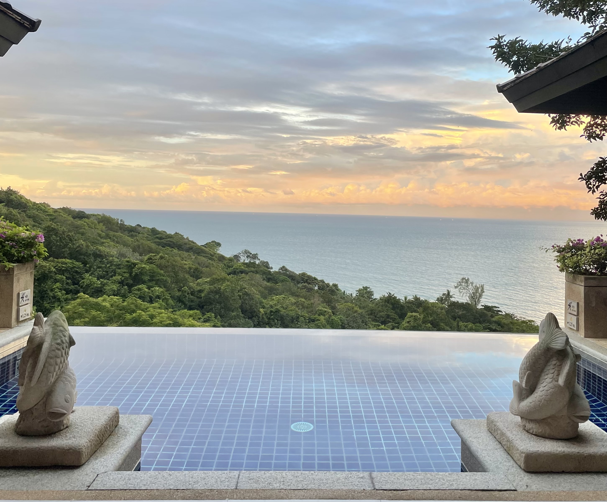
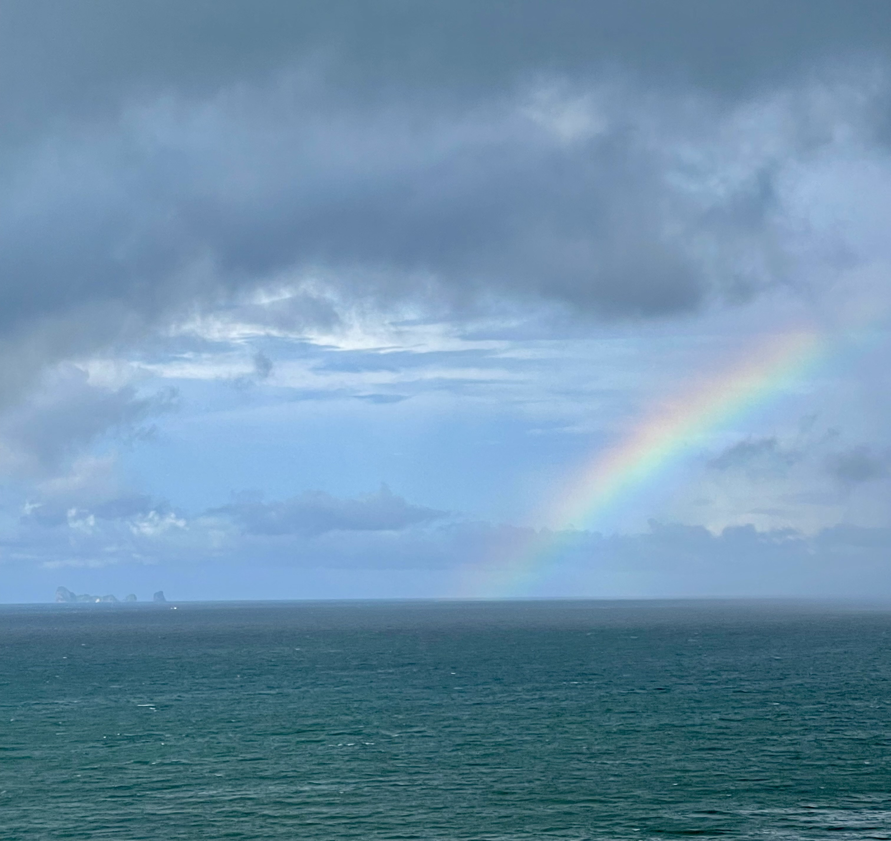
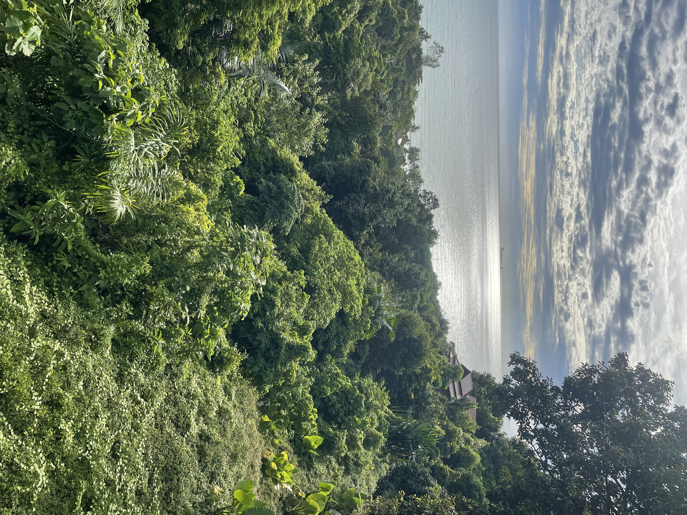
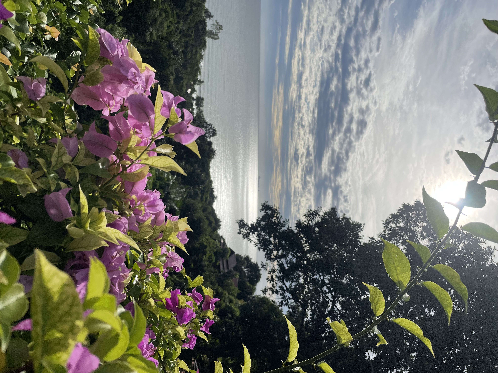
LONG LUNCHES & DINNERS
One of the highlights was having a chef come and cook for us on the terrace. It turned an ordinary evening at the villa into something memorable — good food, warm air and nowhere else we needed to be.
Meals were never rushed and evenings didn't need much planning. On Koh Lanta, the simplest plans often turned out to be the best ones.
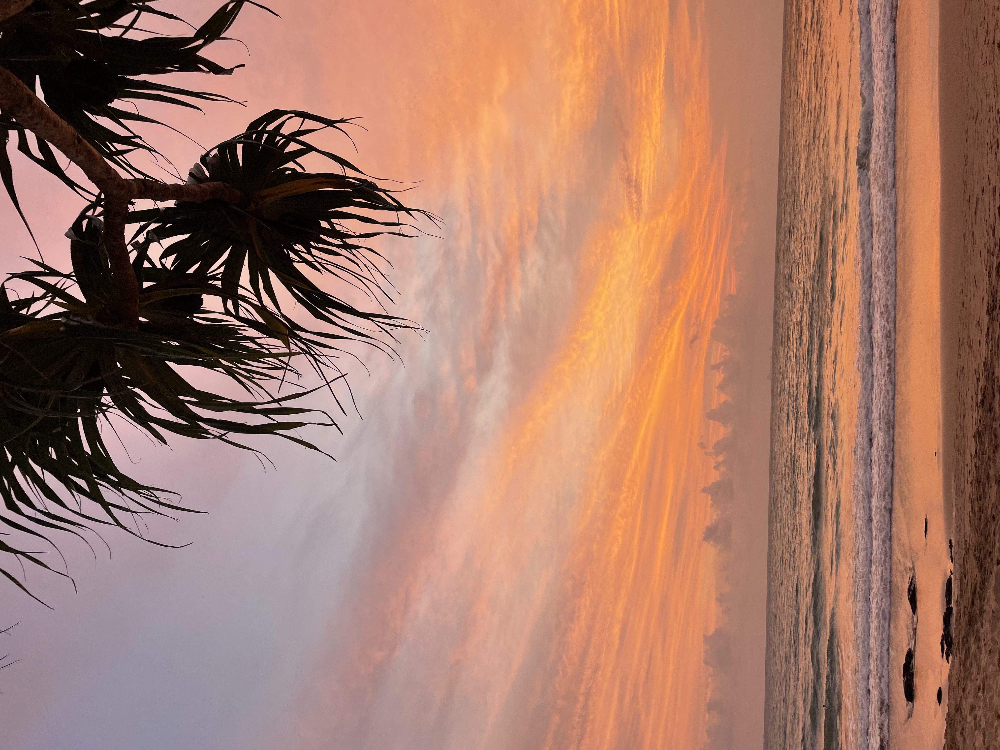
BEST TIME
The dry season is generally the best time to enjoy Koh Lanta, with sunnier days and calmer seas.
THE FEELING
Long beaches, warm water and a wonderfully unhurried island rhythm.
GETTING AROUND
There is plenty to explore, but Koh Lanta is equally rewarding when you decide not to go anywhere at all.
OUR RECOMMENDATIONS
Our base on Koh Lanta. The spacious duplex private pool villa made it very easy to settle in and stay awhile.
Warm water, long stretches of sand and the simple pleasure of walking down to the sea without needing a plan.
Having dinner prepared for us on the terrace was one of the most memorable evenings of the trip.
Daily lessons gave the mornings some energy before returning to the slower pace of the island.
The east coast offers a different side of the island, with traditional wooden buildings and a quieter local atmosphere.
Forest, coastline and a wilder southern edge of the island for the days when you feel like exploring.
FROM THE JOURNAL
Koh Lanta wasn't the sort of place where we felt we needed to be out every morning discovering something new. Quite the opposite. We had arrived looking for an island escape, and Pimalai gave us exactly that.
Our duplex villa became our little world for a few days. There were swims, beach time, Muay Thai lessons, relaxed meals and afternoons where nobody seemed particularly interested in knowing what time it was.
Having a chef come and cook for us on the terrace was one of those small luxuries that stayed with us. Dinner stretched into the evening and there was no reason to go anywhere afterwards.
And perhaps that is what we remember most. Koh Lanta gave us permission to slow down. There was more of the island we could have explored, of course — but some holidays are better when you don't feel obliged to.
MORE FROM OUR CAMERA
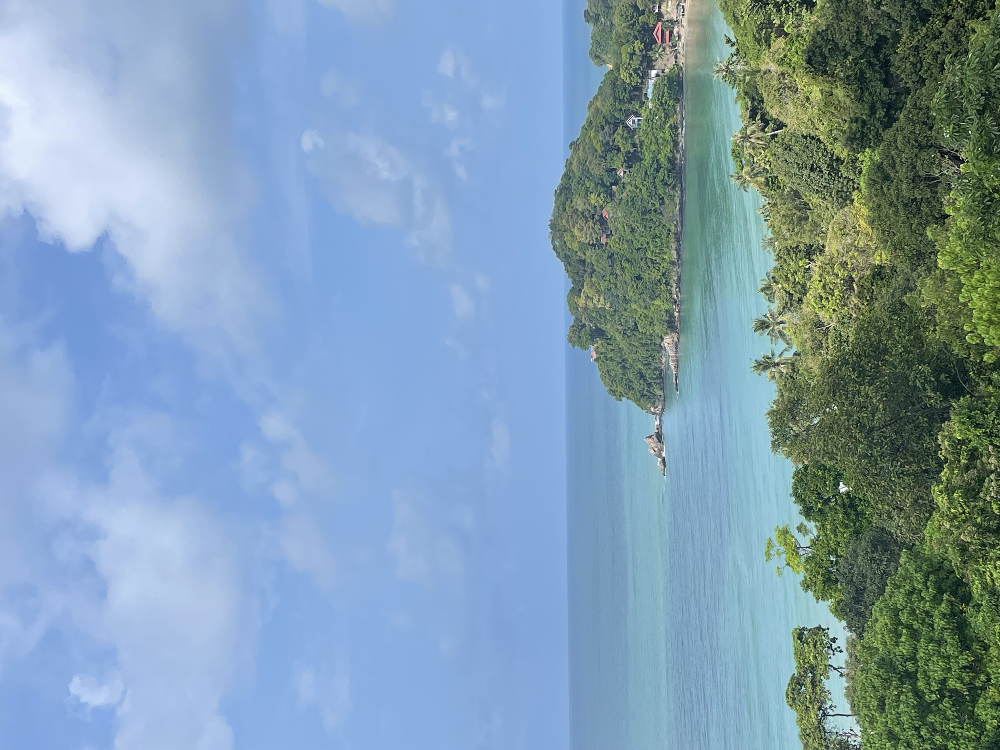
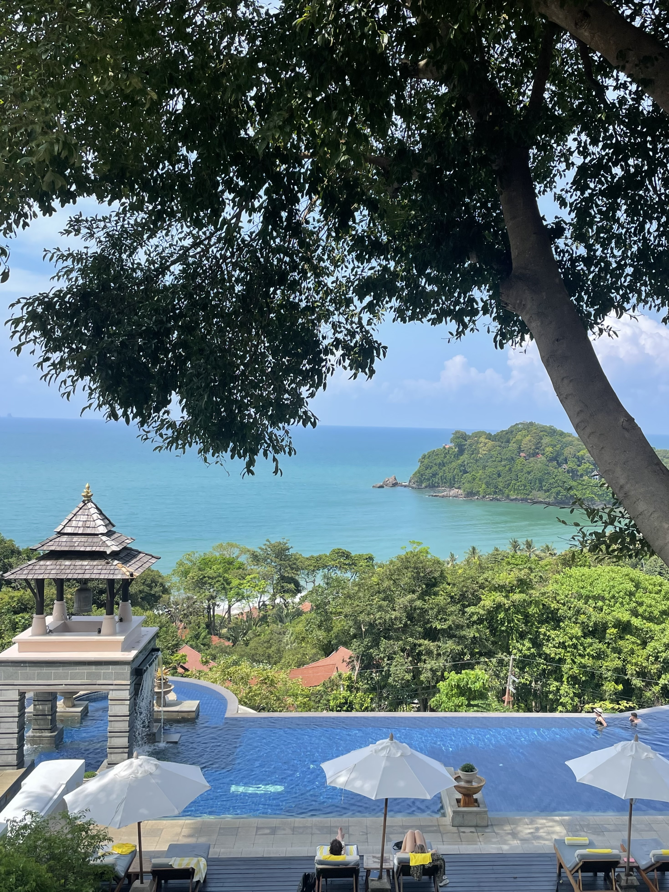
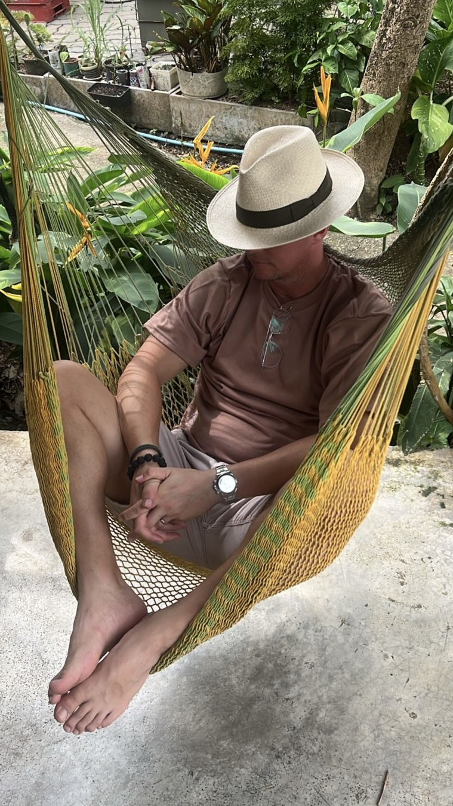
OUR MAP
An island of long beaches, jungle-covered hills and slow days on Thailand's Andaman coast. Koh Lanta joins the places we've explored across Asia.
OUR KOH LANTA
Koh Lanta felt like exactly the kind of island escape we were looking for. Beautiful beaches, warm water and a slower pace made it easy to settle into holiday mode without feeling that we needed to fill every day. We stayed at Pimalai Resort & Spa in a spacious duplex private pool villa, which quickly became our own little retreat.
FROM OUR CAMERA
BEST TIME
The dry season is generally the best time to enjoy Koh Lanta, with sunnier days and calmer seas.
THE FEELING
Long beaches, warm water and a wonderfully unhurried island rhythm.
GETTING AROUND
There is plenty to explore, but Koh Lanta is equally rewarding when you decide not to go anywhere at all.
OUR RECOMMENDATIONS
01
Our base on Koh Lanta. The spacious duplex private pool villa made it very easy to settle in and stay awhile.
02
Warm water, long stretches of sand and the simple pleasure of walking down to the sea.
03
Having dinner prepared for us on the terrace was one of the most memorable evenings of the trip.
04
Daily lessons gave the mornings some energy before returning to the slower pace of the island.
05
Traditional wooden buildings and a quieter local atmosphere on the east coast.
06
Forest, coastline and a wilder southern edge of Koh Lanta for when you feel like exploring.
FROM THE JOURNAL
Koh Lanta wasn't the sort of place where we felt we needed to be out every morning discovering something new. We had arrived looking for an island escape, and Pimalai gave us exactly that.
Our days developed their own rhythm — swims, beach time, Muay Thai lessons, relaxed meals and afternoons where nobody seemed particularly interested in knowing what time it was.
Having a chef come and cook for us on the terrace was one of those small luxuries that stayed with us. Dinner stretched into the evening and there was no reason to go anywhere afterwards.
Koh Lanta gave us permission to slow down. There was more of the island we could have explored, but some holidays are better when you don't feel obliged to.
MORE FROM OUR CAMERA
OUR MAP
An island of long beaches, jungle-covered hills and slow days on Thailand's Andaman coast. Koh Lanta joins the places we've explored across Asia.